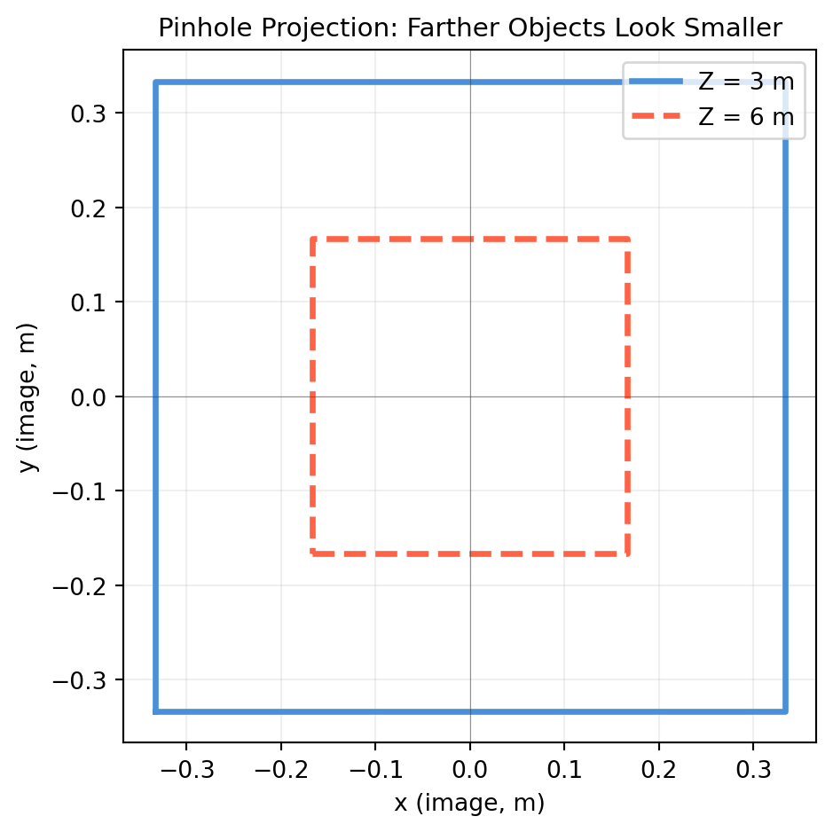

import numpy as np
import matplotlib.pyplot as plt
def project_pinhole(P, f=1.0):
"""Project 3D camera-frame points P (shape N×3) with focal length f.
Returns image points shape (N, 2)."""
X, Y, Z = P[:, 0], P[:, 1], P[:, 2] # each shape (N,)
x = f * X / Z # shape (N,)
y = f * Y / Z # shape (N,)
return np.column_stack([x, y]) # shape (N, 2)
# A unit cube at Z = 3 m (camera space)
corners_3d = np.array([
[-0.5, -0.5, 3.0],
[ 0.5, -0.5, 3.0],
[ 0.5, 0.5, 3.0],
[-0.5, 0.5, 3.0],
[-0.5, -0.5, 3.0], # close the loop
]) # shape (5, 3)
# Same cube at Z = 6 m (twice as far)
corners_far = corners_3d.copy()
corners_far[:, 2] = 6.0 # shape (5, 3)
proj_near = project_pinhole(corners_3d, f=2.0) # shape (5, 2)
proj_far = project_pinhole(corners_far, f=2.0) # shape (5, 2)
fig, ax = plt.subplots(figsize=(5, 5))
ax.plot(proj_near[:, 0], proj_near[:, 1], color='#4a90d9', lw=2.5, label='Z = 3 m')
ax.plot(proj_far[:, 0], proj_far[:, 1], color='tomato', lw=2.5, label='Z = 6 m', ls='--')
ax.set_aspect('equal')
ax.set_xlabel('x (image, m)'); ax.set_ylabel('y (image, m)')
ax.set_title('Pinhole Projection: Farther Objects Look Smaller', fontsize=11)
ax.legend(); ax.grid(True, alpha=0.2)
ax.axhline(0, color='#333333', lw=0.4, alpha=0.5)
ax.axvline(0, color='#333333', lw=0.4, alpha=0.5)
plt.tight_layout()
plt.show()